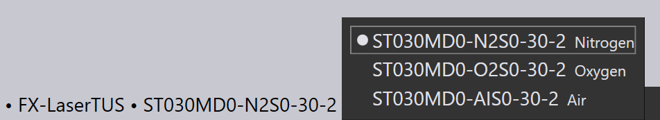

파트 워크플로

Cut CAM으로 전환하기
이제 L 키를 누르기만 하면 레이저 절단을 위해 파트를 툴링 완료할 수 있습니다. 해당 파트는 가장 최근에 사용한 레이저 기계인 기본값 레이저 기계로 툴링 완료됩니다. 절단 경로, 접근 세그먼트, 코너 가공, 툴링 시퀀스가 모두 셋업되며 다음과 같은 결과를 볼 수 있습니다:

하단의 탭은 해당 파트가 FX-LaserTUS 기계를 위해 툴링 완료되었고, lTT(레이저 기술 테이블) ST030MD0-N2S0-30-2를 사용함을 보여줍니다.
-
기계 이름을 클릭하고 새로운 기계를 선택하여 다른 기계에 파트를 툴링 완료할 수 있습니다.
-
선택한 기계, 재료 및 두께에 사용 가능한 레이저 기술 테이블 중에서 다른 LTT를 선택하려면, LTT 이름을 클릭하고 다른 이름을 선택합니다:

| W 키를 눌러 액세스할 수 있는 워크플로 패널을 참조하십시오. 이를 통해 절단 기술 데이터 생성에 대한 컨트롤이 향상되고, 벤딩 및 네스팅을 통해 해당 파트 라우팅 옵션이 제공됩니다. |
시퀀스 네비게이터
자동 툴러는 또한 레이저가 파트에 대해 레이저 절단부를 처리해야 하는 _시퀀스_를 계산합니다. 이 동일한 파트 내 시퀀스는 파트가 다른 파트와 함께 레이아웃에 삽입되는 경우에도 사용할 수 있습니다. 왼쪽 도구 모음에서 이송 설정을 전환하여 (또는 X 키를 사용하여) 절단부 사이의 _이동 라인_을 볼 수 있습니다.


탭 아래의 셰브론을 클릭하거나 Z 키를 눌러, 창의 오른쪽 가장자리에 있는 시퀀스 네비게이터를 열면서 해당 시퀀스를 _편집_도 할 수 있습니다.
파트의 각 툴링 항목에는 시퀀스 네비게이터에 하나의 항목이 있으며, 드래그 앤 드롭을 사용하여 이 항목을 이동하여 툴링을 다시 순서 지정할 수 있습니다. 다음 컨투어 등으로 이동하기 전에 헤드를 올릴지 여부를 제어하는 것과 같은 몇 가지 다른 작업도 수행할 수 있습니다.
시퀀스 네비게이터는 네비게이터를 사용하여 전체 레이아웃(여러 파트가 있는 시트)에 대한 시퀀스를 보고 편집할 수 있는 레이아웃 시퀀싱 페이지에서 보다 자세히 설명됩니다.